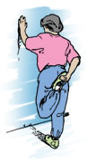
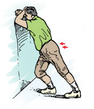
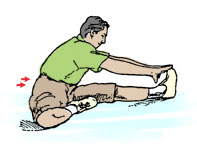
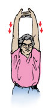
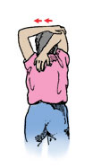
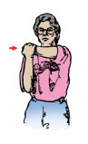
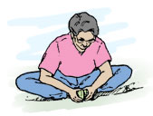
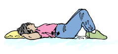
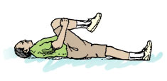

An effective fitness program is more than aerobic training and strength building. To really reap the benefits of exercise, you need to add flexibility and balance training to the mix.
Stretching can help your body get ready for exercise. It is also an essential part of recovering from aerobic activity. All exercise sessions should end with stretching — and not just for the mental relaxation benefits. Increasing your flexibility improves your ability to move easily and can reduce your risk for injury.
A good warm up prepares your body for more intense activity. It gets your blood flowing, raises your muscle temperature, and increases your breathing rate. Warming up gives your body time to adjust to the demands of exercise. This can improve your performance and help you get the results you want.
The simplest way to warm up is to do an aerobic activity at an easy pace. If cycling is what you plan to do, then start out slowly in a low gear.
How long you spend warming up will depend on your fitness level. If you are newer to exercise, your body will respond better with a longer warm up.
Adding stretches to your warm up may improve your exercise performance. Once your muscles are warm, spend a few minutes on stretching. Since the goal of your warm up is to increase your heart rate and get you ready for more intense work, choose stretches that can be done standing up. Floor stretches are best for your cool down segment.
Just as a warm up prepares your body for exercise, an effective cool down gives your body time to recover.
Your cool down begins as you gradually decrease your intensity level at the end of your aerobic exercise session. For example, if you have been walking at a quick pace, begin cooling down by slowing your steps and taking your arms out of the movement. Walk at a comfortable pace until your breathing and heart rate have returned to normal.
Once you are breathing easily, stretch while your muscles are still warm.
Stretching is too often neglected by exercisers pressed to fit workouts into their busy schedules. This common mistake can reduce the effectiveness of exercise because better flexibility results in better fitness.
By increasing your flexibility you can improve your ability to move around. You will have less muscle tension and your posture will likely improve. Most importantly, stretching after each workout reduces your risk for injury.
Get the most out of your flexibility training by following these simple guidelines:
- Always warm up before your stretch. Stretching cold muscles can cause injury
- Stretch slowly and gently. Breathe into your stretch to avoid muscle tension. Relax and hold each stretch 10 to 30 seconds
- Do not bounce your stretches. Ballistic (bouncy) stretching can cause injury
- Stretching should not hurt. If you feel pain, take the stretch easier, breathe deeply and relax into it
Below are some sample stretching exercises. Be sure to hold each stretch for at least 30 seconds.
Quadricep (front of thigh)
|

Hold the top of your left foot with right hand and gently pull your heel toward your buttocks. Repeat with other leg.
|
Calf
|

Stand close to a solid support, and lean on it with your forearms, head resting on hands. Bend one leg and place your foot on the ground in front of you, with the other leg straight behind. Slowly move your hips forward, keeping your lower back flat. Do not bounce.
|
Hamstring
|

Sit down and straighten your left leg. Bend your right leg with the sole of your foot resting next to the inner thigh of your straightened leg. Lean forward from your hips and reach toward your foot. Keep your left foot upright with the ankle and toes relaxed. Repeat with right leg.
|
Upper Body
|

In a standing or sitting position, interlace your fingers. With your palms facing upward, push your arms slightly back and up.
|
Tricep (back of upper arm)
|

With your arms overhead, hold the elbow of one arm with the hand of your other arm. Gently pull the elbow behind your arm. Do slowly. Repeat with the other arm.
|
Shoulder
|

Gently pull your elbow across your chest toward your opposite shoulder. Repeat with the other elbow.
|
Inner Thigh, Hip and Groin
|

Slowly press your elbows onto your inner thighs and hinge forward at your hip.
|
Lower back
|

Tighten your hip muscles and at the same time, tighten your abdominal muscles to flatten your lower back. Hold for 5 to 8 seconds, then relax. Repeat two or three times.
|
|

Pull your right leg toward your chest. Keep the back of your head on the floor. Try to keep your lower back flat. Repeat with your left leg.
|